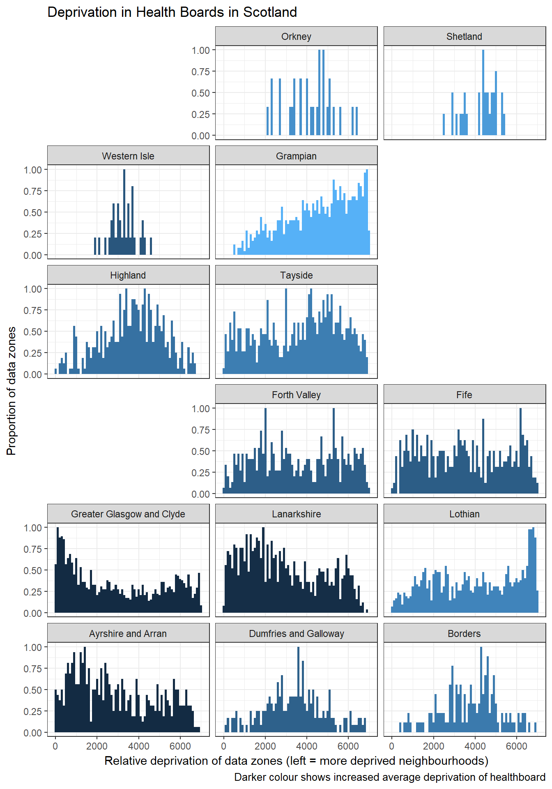

Plotting deprivation in Scotland, using geofacet and sf in R
Mon, May 29, 2017Using the geofacet package to plot deprivation in Scotland by Health Boards
A few months ago, when I was first starting to learn to use R, I tried looking at the data from the Scottish Index of Multiple Deprivation. The Scottish Government split Scotland up into 6976 equally populated “data zones” (not quite neighbourhoods, but pretty close), and ranked them from most deprived (1), to least deprived (6976)
Recently I’ve gone back to the same files, to see if what I’ve learnt has made it easier to look at deprivation in Scotland.
This weekend I found out about a new-ish package, geofacet from Ryan Hafen. Luckily for me, Joseph Adams had already submitted a grid for Scottish Health Boards, making it so easy to plot this all out.
I’ve included the code I used to make the plot.
library(tidyverse)
library(sf)
library(readxl)
library(geofacet)map_scot <- st_read("../data/scot_gov_data/data_zone_shapefiles/.")## Reading layer `SG_SIMD_2016' from data source `C:\Users\callu\Dropbox\blog\content\data\scot_gov_data\data_zone_shapefiles' using driver `ESRI Shapefile'
## Simple feature collection with 6976 features and 49 fields
## geometry type: MULTIPOLYGON
## dimension: XY
## bbox: xmin: 5513 ymin: 530252.8 xmax: 470323 ymax: 1220302
## epsg (SRID): NA
## proj4string: +proj=tmerc +lat_0=49 +lon_0=-2 +k=0.9996012717 +x_0=400000 +y_0=-100000 +datum=OSGB36 +units=m +no_defsdata_postcode_simd <- read_excel("../data/scot_gov_data/00505244.xlsx", sheet = 2)
data_simd_ranks <- read_excel("../data/scot_gov_data/00512735.xlsx", sheet = 3)
data_simd_ranks$HBname[data_simd_ranks$HBname == "Western Isles"] <- "Western Isle"Deprivation in Scotland by Health Boards
So looking at this, brighter colours equal lower average levels of deprivation. A distribution towards the left shows a healthboard with a greater proportion of deprived datazones.
Using the geofacet package, we swap out a normal facet_wrap() for facet_geo(), and tell it what layout we want grid=("nhs_scot_grid"). The only problem is that this grid has “Western Isles” saved as “Western Isle”, so we have to rename out own data to match this. Now our health boards are placed in roughly a geographical order.
data_simd_ranks %>%
select(DataZone = DZ, HBname) %>%
left_join(map_scot, .) %>%
group_by(HBname) %>%
mutate(median_deprivation = median(Rank)) %>%
ungroup() %>%
ggplot() +
geom_histogram(aes(x = Rank, y = ..ncount.., fill = median_deprivation), binwidth = 100) +
facet_geo(~HBname, grid = "nhs_scot_grid") +
labs(title = "Deprivation in Health Boards in Scotland",
x = "Relative deprivation of data zones (left = more deprived neighbourhoods)",
y = "Proportion of data zones",
caption = "Darker colour shows increased average deprivation of healthboard") +
theme_bw() +
theme(legend.position = "none") 
Glasgow versus Edinburgh
In the plot above, the west coast / east coast divide is looking pretty big in the central belt of Scotland. The plot below shows this even more. Glasgows neighbourhoods are massively skewed towards some of the most deprived parts of Scotland, whereas in Edinburgh we see the opposite. Obviously Glasgow still has some very well off parts, and Edinburgh has some deprived areas, but in this graph they seem to be polar opposites.
city_data <- data_simd_ranks %>%
select(DataZone = DZ, LAname) %>%
left_join(map_scot, .) %>%
group_by(LAname) %>%
filter(LAname == "Glasgow City" | LAname == "City of Edinburgh") %>%
mutate(median_deprivation = median(Rank)) %>%
ungroup()
city_data$LAname <- parse_factor(city_data$LAname, levels = c("Glasgow City", "City of Edinburgh"))
ggplot(city_data) +
geom_histogram(aes(x = Rank, y = ..ncount.., fill = median_deprivation), binwidth = 100) +
facet_wrap(~LAname) +
labs(title = "Deprivation in Glasgow and Edinburgh",
x = "Relative deprivation of data zones",
y = "Proportion of data zones",
caption = "Distribution to the left shows increased deprivation in city, darker colour shows increased average deprivation of city") +
theme_bw() +
theme(legend.position = "none")